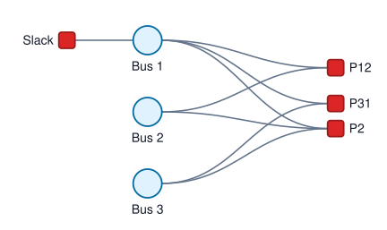
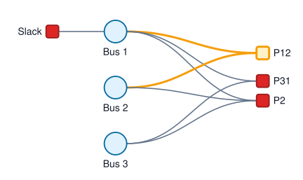

DC State Estimation
This example builds a three-bus DC power system state estimation problem, where all susceptances of the branches are equal 10 per-unit. The buses are connected in a triangle, so the factor graph contains a cycle and is a natural fit for iterative Gaussian belief propagation.
Variable Nodes
The state variables are the bus voltage angles at all three buses. Each angle is modeled as a scalar variable:
using FactorGraph
variables = [
GaussianVariable(:θ₁, 1; label = "Bus 1"),
GaussianVariable(:θ₂, 1; label = "Bus 2"),
GaussianVariable(:θ₃, 1; label = "Bus 3")
]Slack Factor Node
Bus 1 is the slack bus. The slack angle measurement is represented as a unary factor:
slack = GaussianFactor(:θ₁, 0.0, 1.0, 1e-6; label = "Slack")Flow Factor Nodes
Branch-flow measurements connect the two endpoint angle variables. Here we use two flow active measurements between buses 1 and 2 and buses 3 and 1.
P12 = GaussianFactor(:θ₁, :θ₂, 0.70, [10.0 -10.0], 0.0016; label = "P12")
P31 = GaussianFactor(:θ₃, :θ₁, 0.30, [10.0 -10.0], 0.0015; label = "P31")Injection Factor Node
An active-power injection measurement at bus 2 depends on all neighboring bus angles:
P2 = GaussianFactor(:θ₁, :θ₂, :θ₃, -1.70, [-10.0 20.0 -10.0], 0.0025; label = "P2")Factor Graph Construction
Collect the factors and build the factor graph:
factors = [slack, P12, P31, P2]
graph = factorGraph(variables, factors)The graph can be rendered as an SVG factor graph figure:
saveGraphFigure("dcse.svg", graph)
Running Belief Propagation
Run Gaussian belief propagation on the graph:
inference = canonical(graph)
gbp!(graph, inference; iterations = 60)Results
And print results:
printMarginal(graph, inference)Variable marginals (canonical form):
Marginal for variable node "Bus 1":
mean = [-8.611528970440727e-19]
covariance = [9.468476235929465e-7]
information = [-9.094947017729282e-13]
precision = [1.056136145967563e6]
Marginal for variable node "Bus 2":
mean = [-0.07]
covariance = [6.479708799992993e-6]
information = [-10802.954601922189]
precision = [154327.9228846027]
Marginal for variable node "Bus 3":
mean = [0.029999999999999992]
covariance = [1.363749892957821e-5]
information = [2199.816854609121]
precision = [73327.22848697074]Dynamic Measurement Update
If a measurement changes, update the corresponding factor and continue Gaussian belief propagation from the current message state. For example, suppose the P12 flow measurement changes:
updateFactor!(graph, "P12"; mean = 0.74)The figure below shows the updated P12 factor together with its incident edges:
saveGraphFigure(
"ddcse.svg",
graph;
highlight = [(factor = "P12", stroke = "#f59e0b", fill = "#fef3c7", strokeWidth = 3)]
)
Gaussian belief propagation can then continue from the current message state:
gbp!(graph, inference; iterations = 20)
printMarginal(graph, inference)Variable marginals (canonical form):
Marginal for variable node "Bus 1":
mean = [-1.1929120506303018e-15]
covariance = [9.468476235929465e-7]
information = [-1.2598775356309488e-9]
precision = [1.056136145967563e6]
Marginal for variable node "Bus 2":
mean = [-0.07153846153841474]
covariance = [6.479708799992993e-6]
information = [-11040.382175583585]
precision = [154327.9228846027]
Marginal for variable node "Bus 3":
mean = [0.02884615384615818]
covariance = [1.363749892957821e-5]
information = [2115.20851404755]
precision = [73327.22848697074]The same inference object is reused, so the messages from the previous run act as a warm start.
Validation
Compare the loopy Gaussian belief propagation result with the centralized weighted least-squares solution:
reference = solveWLS(graph)
maxMeanError(graph, inference, reference)4.679590048795035e-14Residuals compare each measurement factor with the estimate implied by the current marginal means. Normalized residuals scale them by the measurement standard deviation:
residuals(graph, inference)
normalizedResiduals(graph, inference)4-element Vector{@NamedTuple{factor::String, index::Int64, value::Vector{Float64}}}:
(factor = "Slack", index = 1, value = [1.1929120506303017e-12])
(factor = "P12", index = 2, value = [0.6153846153966108])
(factor = "P31", index = 3, value = [0.2979217958606818])
(factor = "P2", index = 4, value = [0.3846153845972955])